Name: Wachsmann, Nik
Matrikelnummer: [MNR]
Name: Stahl, Ben
Matrikelnummer: 8238700
Abgabedatum: 04.05.2026
PICasso ist ein Simulator für
PIC-Midrange-Mikrocontroller (z.B. PIC16F84), geschrieben in C++17.
Die Applikation liest assemblierte PIC-Programme im
.LST-Format ein und führt diese Instruktion für
Instruktion aus. Dabei werden alle wesentlichen Hardwarekomponenten
des PIC simuliert: ein 2-Bank-RAM mit Registerspiegelung, ein
8-Bit-W-Akkumulator, ein 8-Level-Hardware-Stack, ein
Timer/Prescaler-Subsystem sowie die vollständige Ausführung aller 35
PIC-Midrange-Instruktionen.
Die Applikation bietet eine interaktive Terminal-Oberfläche (ncurses), über die der Benutzer Programme laden, schrittweise oder im Dauerlauf ausführen, RAM-Inhalte inspizieren und modifizieren sowie einzelne Bits umschalten kann. Die Simulation läuft in einem separaten Thread, während die UI im Hauptthread rendert – synchronisiert über atomare Flags und Mutexe.
Zweck: PICasso löst das Problem, PIC-Assemblerprogramme ohne physische Hardware testen und debuggen zu können. Es dient als Lern- und Entwicklungswerkzeug für eingebettete Systeme.
Voraussetzungen:
libncurses-dev unter Linux)
Schritt-für-Schritt-Anleitung:
# 1. Repository klonen / Projektverzeichnis wechseln git clone https://github.com/DefinitlyNotABot/PICasso.git cd PICasso # 2. Build-Verzeichnis erstellen und CMake konfigurieren mkdir -p build && cd build cmake .. # 3. Projekt kompilieren make # 4. Simulator starten ./PICasso # 5. Tests ausführen (optional) cd .. ./build/AllTests
Nach dem Start öffnet sich die ncurses-Oberfläche. Über den
Load-Button kann eine .LST-Datei aus dem
progs/-Verzeichnis geladen werden. Anschließend kann
das Programm mit Step, Run (Dauerlauf) oder
Dash (Schnelllauf) ausgeführt werden.
| Technologie | Beschreibung | Begründung |
|---|---|---|
| C++17 | Primäre Programmiersprache |
Bietet hardwarenahe Kontrolle, geeignet für
Simulator-Entwicklung; unterstützt
std::optional, std::shared_ptr,
std::filesystem und strukturierte Bindings.
|
| CMake | Build-System |
Plattformunabhängiges Build-System; ermöglicht automatisches
Herunterladen von Abhängigkeiten (Catch2) via
FetchContent.
|
| ncurses | Terminal-UI-Bibliothek | Ermöglicht eine interaktive TUI ohne grafische Abhängigkeiten; ideal für ein konsolenbasiertes Debugging-Tool. Unterstützt Farben, Mauseingabe und Fenstermanagement. |
| Catch2 | Unit-Test-Framework |
Header-only-Framework mit BDD-Stil
(TEST_CASE/SECTION); automatische
Testregistrierung und Generatoren (GENERATE).
|
| nlohmann/json | JSON-Parsing für Testdateien | Erlaubt deklarative Testspezifikation in JSON-Dateien; einfache Integration als Header-only-Bibliothek. |
| std::thread / std::mutex / std::atomic | Multithreading | Simulation und UI laufen parallel; atomare Flags steuern den Simulationszustand. |
Die Applikation orientiert sich an einer geschichteten Architektur, die Elemente der Clean Architecture aufgreift:
Bit, Nibble,
Byte, Register) sowie
Ram, Stack und
MemoryInterface. Diese Klassen modellieren die
Hardwaredomäne des PIC-Mikrocontrollers und haben keine
Abhängigkeiten zu Framework- oder UI-Code.
Instruction (mit allen 35+ Unterklassen),
ALU, Compiler, Program,
Timer, Prescaler und PIC.
Diese Schicht orchestriert die Simulation und nutzt die
Domain-Klassen.
Filereader (Dateisystem-Zugriff),
Logger (Ausgabe-Abstraktion).
TerminalUI, TUI_Renderer,
TUI_Controller und alle TUI-Hilfsklassen. Diese
hängen von ncurses ab und nutzen PICSnapshot als
Daten-Transfer-Objekt.
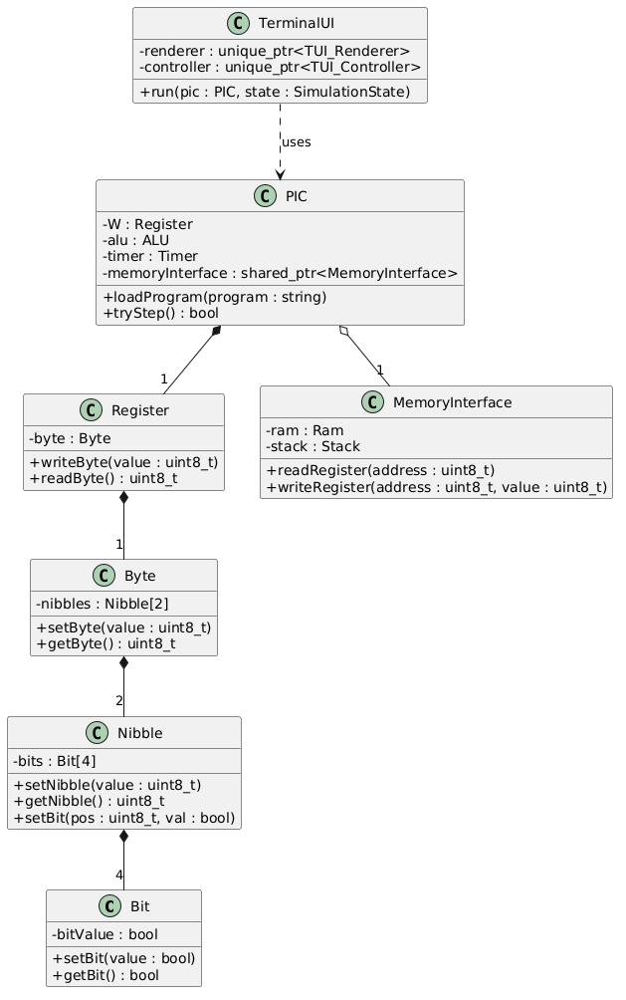
Domain Code ist Code, der die fachliche Logik der Anwendungsdomäne abbildet – unabhängig von Frameworks, Datenbanken oder UI. Im Fall von PICasso ist die Domäne die PIC-Mikrocontroller-Hardware.
Beispiel: Die Klasse
Stack (header/stack.hpp) modelliert den
8-Level-Hardware-Stack des PIC. Sie hat keine Abhängigkeiten zu
externen Bibliotheken und bildet rein fachliche Hardware-Logik ab:
class Stack {
private:
uint8_t stack[8];
uint8_t stackPointer;
public:
Stack();
void push(uint8_t value);
uint8_t pop();
void reset();
};
Die Dependency Rule besagt, dass Abhängigkeiten immer von außen nach innen zeigen sollen – äußere Schichten dürfen innere kennen, aber nicht umgekehrt.
Die Klasse Register (Domain/Entity) hat keine
Abhängigkeiten zu äußeren Schichten. Sie hängt nur von
Byte ab, welches wiederum nur von
Nibble und Bit abhängt – alles innerhalb
der Domain-Schicht. Die äußere Schicht Ram hängt von
Register ab, aber Register weiß nichts von
Ram. Die Abhängigkeit zeigt korrekt von außen nach
innen.
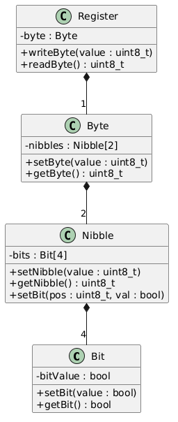
Negativ-Beispiel: Dependency Rule
Die abstrakte Klasse Instruction (Application Layer)
hat ein statisches Feld
static std::shared_ptr<MemoryInterface>
memoryInterface, das durch die PIC-Klasse gesetzt wird. Das bedeutet,
dass die Application-Layer-Klasse Instruction direkt an
die konkrete Implementierung MemoryInterface gekoppelt
ist. Zudem wird das statische Feld von PIC
(einem Orchestrator) gesetzt – eine implizite Abhängigkeit von außen
nach innen die zur Laufzeit besteht, obwohl die Instruction-Klasse
eigentlich keine Kenntnis über PIC haben sollte.
// In header/instruction.hpp:
class Instruction {
protected:
static std::shared_ptr<MemoryInterface> memoryInterface; // globale Kopplung
static std::shared_ptr<Register> W;
...
};
// In src/pic.cpp:
PIC::PIC() {
Instruction::memoryInterface = memoryInterface; // PIC setzt statisches Feld
Instruction::W = std::shared_ptr<Register>(&W, [](Register*) {});
}
Lösung: Dependency Injection – die
MemoryInterface-Referenz sollte als
Konstruktor-Parameter an jede Instruction übergeben werden, statt
über ein statisches Feld.
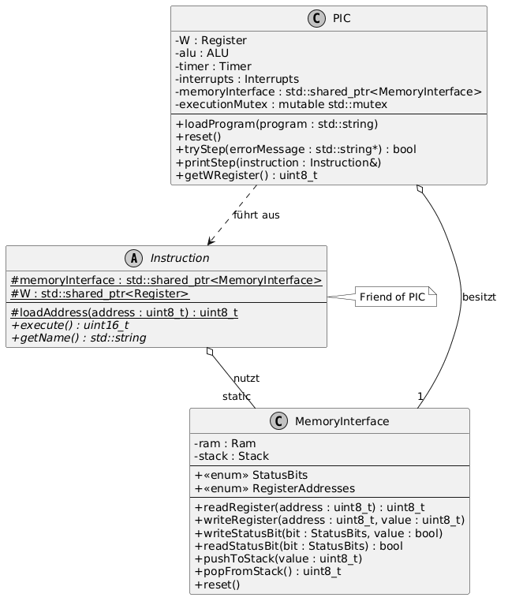
[Jeweils eine Klasse als positives und negatives Beispiel für SRP; jeweils UML und Beschreibung der Aufgabe bzw. der Aufgaben und möglicher Lösungsweg des Negativ-Beispiels (inkl. UML)]
Klasse: Stack
(header/stack.hpp)
Die Klasse Stack hat genau eine Verantwortlichkeit: die
Verwaltung eines 8-Level-LIFO-Stacks für Rücksprungadressen. Sie
bietet ausschließlich push(), pop() und
reset(). Es gibt keinen Grund, diese Klasse zu ändern,
außer wenn sich die Stack-Logik des PIC ändert – also genau ein
Änderungsgrund.
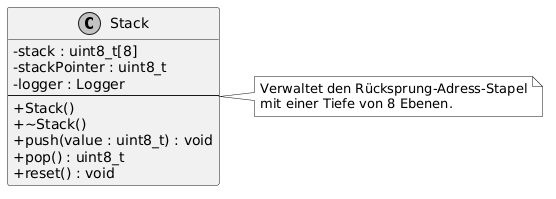
Klasse: PIC
(header/pic.hpp)
Die PIC-Klasse ist ein "God Object" mit mehreren
Verantwortlichkeiten:
getSnapshot())
tryWriteRegister(), tryToggleBit())
class PIC {
ALU alu;
Program loadedProgram;
Register W;
Timer timer;
std::shared_ptr<MemoryInterface> memoryInterface;
std::shared_ptr<Prescaler> prescaler;
uint64_t totalSimulatedTimeUs;
mutable std::mutex executionMutex;
Logger logger;
// ... 15+ öffentliche Methoden
};
Lösungsweg: Die Klasse sollte aufgeteilt werden in:
PICHardware – hält Register, RAM, Timer
(Hardware-Zustand)
PICSimulator – orchestriert Instruktionsausführung
PICDebugInterface – bietet thread-sichere
Zugriffsmethoden für die UI
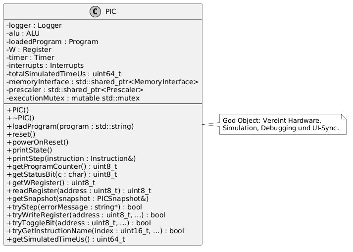
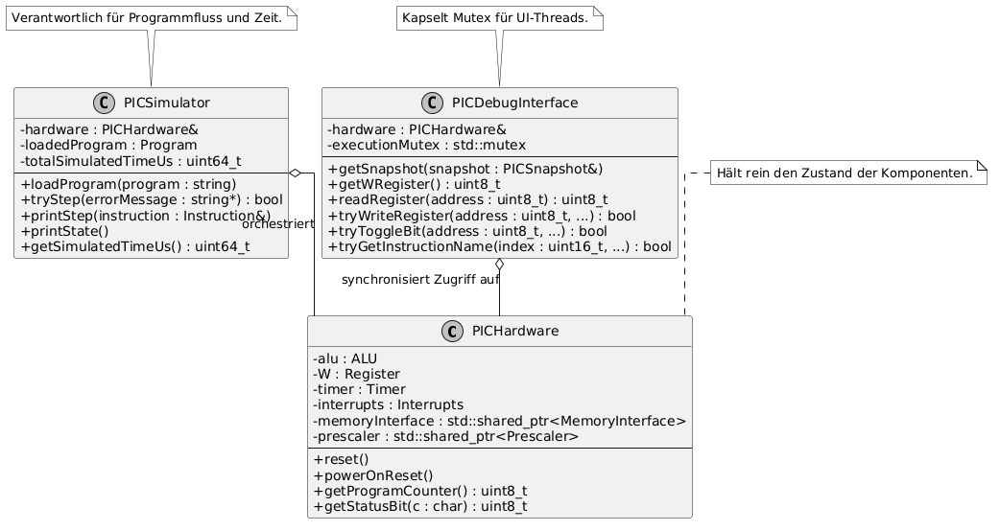
[Jeweils eine Klasse als positives und negatives Beispiel für OCP]
Klasse: Instruction (abstrakte
Basisklasse, header/instruction.hpp)
Die Klasse Instruction definiert die abstrakte
Schnittstelle virtual uint16_t execute() = 0. Neue
Instruktionstypen können durch Erstellen neuer Unterklassen
hinzugefügt werden, ohne die Basisklasse zu modifizieren. Das
Verhalten wird durch Vererbung erweitert. Beispiel: Um eine neue
Instruktion hinzuzufügen, wird eine neue Klasse erstellt, die
Instruction erbt und
execute() implementiert.
class Instruction {
public:
virtual uint16_t execute() = 0; // offen für Erweiterung
virtual std::string getName() = 0;
virtual ~Instruction() = default;
};
class ADDWF : public Arithmetic { // Erweiterung ohne Änderung der Basis
public:
uint16_t execute() override;
std::string getName() override;
};
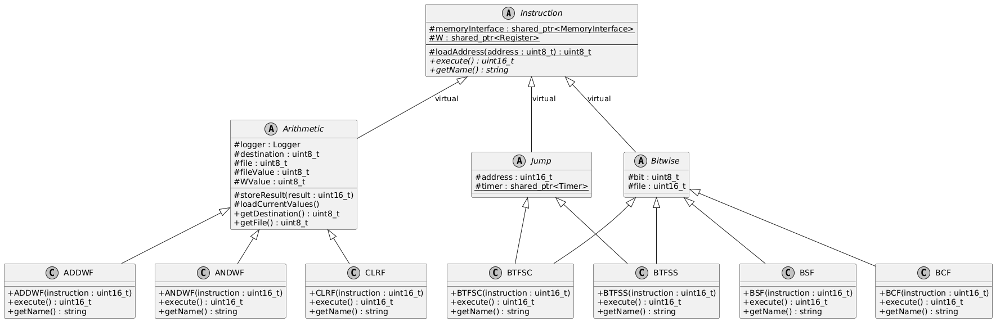
Klasse: Compiler
(src/compiler.cpp)
Die Methode Compiler::getInstruction() enthält eine
große Switch-Kaskade, die für jede Instruktion einen expliziten Case
hat. Wenn eine neue Instruktion hinzugefügt wird, muss die Methode
getInstruction() modifiziert werden – ein klarer
Verstoß gegen das Open/Closed Principle.
std::unique_ptr<Instruction> Compiler::getInstruction(const uint16_t instruction) {
switch(instruction) {
case 0x0064: return std::make_unique<CLRWDT>(instruction);
case 0x0009: return std::make_unique<RETFIE>(instruction);
case 0x0008: return std::make_unique<RETURN>(instruction);
case 0x0063: return std::make_unique<SLEEP>(instruction);
// ... ~35 weitere Cases
}
// ... weitere Switch-Blöcke mit Bitmasks
}
Lösung: Ein Registry-Pattern / Factory-Map, bei der jede Instruktionsklasse sich selbst registriert:
// Instruction-Factory mit Registry
using InstructionFactory = std::function<std::unique_ptr<Instruction>(uint16_t)>;
std::map<uint16_t, InstructionFactory> instructionRegistry;
// Registrierung in der jeweiligen Instruktionsklasse:
static bool registered = []() {
instructionRegistry[0x0700] = [](uint16_t op) {
return std::make_unique<ADDWF>(op);
};
return true;
}();
[Dependency Inversion Principle: jeweils eine Klasse als positives und negatives Beispiel]
Klasse: ALU
(header/alu.hpp)
Die ALU hängt von der abstrakten Schnittstelle
Instruction ab, nicht von konkreten
Instruktionsimplementierungen. Die Methode
executeInstruction(Instruction&) akzeptiert eine
Referenz auf die abstrakte Basisklasse. Dadurch kann die ALU jede
beliebige Instruktion ausführen, ohne konkrete Klassen zu kennen:
class ALU {
public:
uint16_t executeInstruction(Instruction& instruction) {
return instruction.execute();
}
};
Die ALU hängt von der Abstraktion (Instruction) ab,
nicht von den Details (ADDWF,
SUBWF, etc.) – konform mit DIP.
Klasse: Instruction (alle
Unterklassen)
Alle Instruktionen hängen direkt von der konkreten Klasse
MemoryInterface ab (über ein statisches Feld). Es gibt
kein Interface oder abstrakte Klasse, gegen die programmiert wird.
Falls die Speicherverwaltung anders implementiert werden soll (z.B.
für Tests mit Mock-Speicher), muss die konkrete
MemoryInterface-Klasse geändert werden.
class Instruction {
protected:
static std::shared_ptr<MemoryInterface> memoryInterface; // konkrete Klasse, kein Interface
};
Lösung: Ein abstraktes Interface
IMemoryInterface einführen, von dem
MemoryInterface erbt. Die
Instruction-Klasse hängt dann nur vom Interface ab:
class IMemoryInterface {
public:
virtual uint8_t readRegister(uint8_t address) = 0;
virtual void writeRegister(uint8_t address, uint8_t value) = 0;
virtual ~IMemoryInterface() = default;
};
Klasse: Filereader
(header/filereader.hpp)
Die Klasse Filereader hat eine minimale Kopplung zu
anderen Klassen. Sie bietet eine einzige öffentliche Methode
readFile(filename) → tuple<bool, string>, die
eine Datei liest und den Inhalt zurückgibt. Sie hat keine
Abhängigkeiten zu PIC-spezifischen Klassen.
Aufrufer: Nur die Klasse Program nutzt
Filereader in der Methode loadProgram().
Ebenso nutzt TUI_Controller sie indirekt über
Program. Da Filereader nur
Standard-C++-Bibliotheken verwendet und keine PIC-spezifischen Typen
kennt, kann sie problemlos wiederverwendet oder ausgetauscht werden.
Die Kopplung ist gering, weil:
Program) ist direkt abhängigtuple<bool, string>)
Klasse: Logger
(header/logger.hpp)
Die Klasse Logger ist ein
Pure Fabrication – sie repräsentiert kein Konzept
aus der PIC-Hardware-Domäne, sondern wurde ausschließlich aus
softwaretechnischen Gründen erstellt, um eine einheitliche
Logging-Infrastruktur bereitzustellen.
Begründung des Einsatzes: Ohne den Logger müsste
jede Klasse ihre eigene Ausgabe-Logik implementieren (z.B.
std::cout-Aufrufe), was zu Codeduplizierung führen
würde. Der Logger bündelt die Verantwortlichkeit der Protokollierung
an einer Stelle und bietet:
INFO,
ERROR, etc.)
"Compiler",
"PIC")
main.cpp)
Die Klasse gehört nicht zur Domäne, ist aber essenziell für die Wartbarkeit der Software.
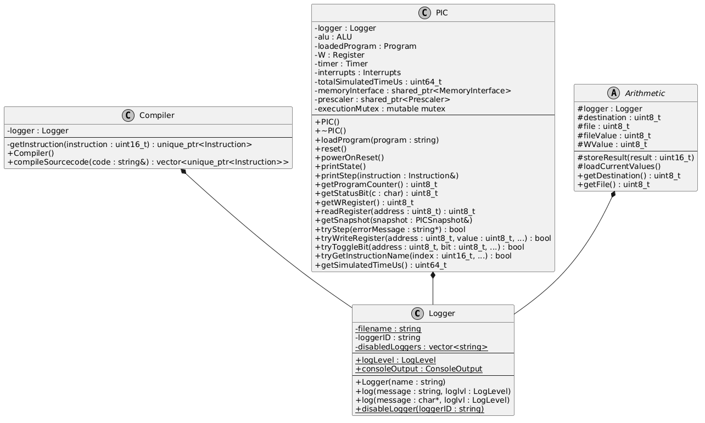
Beispiel: Die Klasse
Arithmetic
(header/instructionset/arithmetic.hpp) bündelt
gemeinsame Logik aller arithmetischen Instruktionen.
Vorher (duplizierter Code): Ohne die gemeinsame Basisklasse müsste jede arithmetische Instruktion (ADDWF, SUBWF, DECF, INCF, etc.) selbst:
// Hypothetisch OHNE DRY – Code in jeder Instruktion dupliziert:
class ADDWF : public Instruction {
uint16_t execute() override {
uint8_t dest = (opcode >> 7) & 1;
uint8_t file = opcode & 0x7F;
uint8_t fileVal = memoryInterface->readRegister(file);
uint8_t wVal = W->readByte();
uint16_t result = wVal + fileVal;
if (dest == 0) W->writeByte(result);
else memoryInterface->writeRegister(file, result);
memoryInterface->writeStatusBit(Z, (result & 0xFF) == 0);
// ... Carry, DC etc.
}
};
Nachher (DRY durch Basisklasse):
// header/instructionset/arithmetic.hpp
class Arithmetic : public virtual Instruction {
protected:
uint8_t destination, file, fileValue, WValue;
void storeResult(uint16_t result); // Gemeinsame Logik: Ergebnis speichern
void loadCurrentValues(); // Gemeinsame Logik: Werte laden
public:
uint8_t getDestination();
uint8_t getFile();
};
// Jede Instruktion nutzt die gemeinsamen Methoden:
uint16_t ADDWF::execute() {
loadCurrentValues();
uint16_t result = WValue + fileValue;
storeResult(result);
// Setze Flags ...
return 1;
}
Auswirkung: Die gemeinsame Logik wird in der
Basisklasse Arithmetic
zentralisiert. Änderungen (z.B. am Speicherzugriff) müssen nur
einmal vorgenommen werden, nicht in jeder der ~11 arithmetischen
Instruktionen. Dies reduziert Fehlerquellen und verbessert die
Wartbarkeit.
| # | Test | Datei | Beschreibung |
|---|---|---|---|
| 1 | Bit initialisiert korrekt |
test_bit.cpp |
Prüft, ob ein neu erstelltes Bit-Objekt mit
false initialisiert wird.
|
| 2 | Bit kann gesetzt werden (true) |
test_bit.cpp |
Setzt ein Bit auf true und verifiziert den
Wert.
|
| 3 | Bit kann gesetzt werden (false) |
test_bit.cpp |
Setzt ein Bit auf false und verifiziert, dass
es false bleibt.
|
| 4 |
Nibble default constructor initializes to 0
|
test_nibble.cpp | Prüft, ob ein Nibble (4 Bit) standardmäßig mit 0 initialisiert wird. |
| 5 | Nibble setBit and getBit |
test_nibble.cpp |
Setzt einzelne Bits eines Nibbles und prüft sowohl einzelne
Bits als auch den Gesamtwert (z.B. 0b0101).
|
| 6 | Byte default constructor |
test_byte.cpp |
Prüft, ob getByte(),
getLowNibble() und
getHighNibble() jeweils 0 zurückgeben.
|
| 7 | Byte setByte and getByte |
test_byte.cpp |
Setzt 0xAB, prüft ob
getLowNibble() = 0xB und
getHighNibble() = 0xA.
|
| 8 | Byte setBit and getBit |
test_byte.cpp |
Setzt Bits 0, 3, 4, 7 auf true und verifiziert, dass
getByte() == 0x99 (10011001).
|
| 9 | Ram reset initializes memory correctly |
test_ram.cpp | Prüft initiale Registerwerte: STATUS (0x03) hat Bits 3+4 gesetzt, TRISA (0x85)=0x1F, TRISB (0x86)=0xFF. |
| 10 | Read and write registers |
test_ram.cpp |
Schreibt 0xAB an Adresse 0x10,
liest zurück und vergleicht; testet unabhängige Register.
|
Alle Tests laufen vollautomatisch über das Catch2-Framework. Mit dem
Befehl ./AllTests werden alle Tests ausgeführt, ohne
manuelle Konfiguration. Das CMake-Build-System registriert die Tests
automatisch via catch_discover_tests() in der
CTestTestfile.cmake, sodass auch ctest
verwendet werden kann. Keine manuellen Schritte, Eingaben oder
Inspektionen sind nötig – jeder Test besteht oder schlägt fehl mit
klarer Fehlermeldung.
Die Tests decken mehrere Abstraktionsebenen ab:
test_validate.cpp) mit JSON-Testdaten prüfen
W-Register, Statusflags und RAM nach jeder Instruktion
Testabdeckung: Die Memory-Hierarchie (Bit→Nibble→Byte→Register→Ram) ist gut abgedeckt. Verbesserungspotenzial besteht bei der Abdeckung einzelner Instruktionen (z.B. dedizierte Tests für ADDWF-Carry, SUBWF-Borrow, etc.) und beim Timer/Prescaler-Subsystem.
Die Tests folgen guten Praktiken:
"Bit initialisiert korrekt",
"Byte setByte and getByte"
test_validate.cpp verwendet
GENERATE(from_range(files)) für automatische
Parametrisierung über alle JSON-Testdateien
[Analyse und Begründung des Einsatzes von 2 Fake/Mock-Objekten; ohne Dritthersteller-Bibliothek; jeweils UML-Diagramm]
Fake 1: FakeMemoryInterface
Um Instruktionen isoliert testen zu können, ohne das vollständige
RAM-System aufzubauen, kann ein
FakeMemoryInterface erstellt werden, das die gleiche
Schnittstelle wie MemoryInterface bietet, aber intern
eine einfache
std::map<uint8_t, uint8_t> verwendet.
class FakeMemoryInterface : public MemoryInterface {
std::map<uint8_t, uint8_t> fakeMemory;
public:
uint8_t readRegister(uint8_t addr) override { return fakeMemory[addr]; }
void writeRegister(uint8_t addr, uint8_t val) override { fakeMemory[addr] = val; }
// Statusbits als einfache Variablen
};
Begründung: Ermöglicht das Testen einzelner Instruktionen ohne Seiteneffekte auf echten RAM. Der Fake vereinfacht die Initialisierung und erlaubt exakte Kontrolle über jeden Registerwert.
Fake 2: FakeProgram
Für Tests, die die PIC::tryStep()-Logik prüfen, kann
ein FakeProgram verwendet werden, das fest vorgegebene
Instruktionen zurückgibt, ohne eine .LST-Datei parsen zu müssen.
class FakeProgram {
std::vector<std::unique_ptr<Instruction>> instructions;
public:
void addInstruction(std::unique_ptr<Instruction> instr) {
instructions.push_back(std::move(instr));
}
Instruction& getInstructionAt(uint16_t idx) {
return *instructions.at(idx);
}
uint16_t getProgramLength() { return instructions.size(); }
};
Begründung: Macht Tests unabhängig vom Dateisystem und vom Compiler. Die Testdaten werden direkt im Test definiert, was die Tests schneller und deterministischer macht.
| Bezeichnung | Bedeutung | Begründung |
|---|---|---|
Register |
8-Bit-Speicherzelle im RAM des PIC-Mikrocontrollers | Zentraler Begriff der PIC-Hardware; wird in Datenblatt, Code und Kommunikation einheitlich verwendet. |
W (Working Register) |
Der Akkumulator-Register des PIC, über den alle arithmetischen Operationen laufen |
Standardbezeichnung in der PIC-Architektur; im Code als
Register W in der PIC-Klasse modelliert.
|
Stack |
8-Level-Hardware-Stack für Rücksprungadressen bei CALL/RETURN |
Direkt aus der PIC-Hardware übernommen; gleichnamig im Code
als Klasse Stack.
|
Prescaler |
Vorteilerzähler, der die Eingangsfrequenz für Timer0 oder Watchdog herunterteilt |
PIC-spezifischer Fachbegriff; im Code 1:1 als Klasse
Prescaler mit TMR0/WDT
Source modelliert.
|
Die Applikation enthält kein Repository im DDD-Sinne. Begründung:
Ein Repository dient dem persistenten Speichern und Abrufen von
Domain-Objekten (z.B. aus einer Datenbank). PICasso ist ein
Echtzeit-Simulator, der den Zustand des Mikrocontrollers vollständig
im Arbeitsspeicher hält. Es gibt keine Persistenzschicht: Programme
werden bei jedem Start neu aus .LST-Dateien geladen,
und der Simulationszustand wird nicht gespeichert. Die Domäne eines
Hardware-Simulators erfordert keinen dauerhaften Speicher für
Domain-Objekte – der Zustand existiert nur während der Laufzeit,
genau wie bei echter Hardware.
Aggregate: MemoryInterface als
Aggregate Root über Ram und Stack.
MemoryInterface bildet eine transaktionale Grenze um
den gesamten Speicherzustand: Es enthält Ram (2 Bänke ×
80 Register) und Stack (8-Level). Alle Zugriffe auf den
Speicher laufen über MemoryInterface – direkter Zugriff
auf Ram oder Stack von außen ist nicht
vorgesehen. Dadurch stellt MemoryInterface die
Konsistenz des Speicherzustands sicher (z.B. Bank-Switching,
Registerspiegelung, Program Counter Synchronisation).
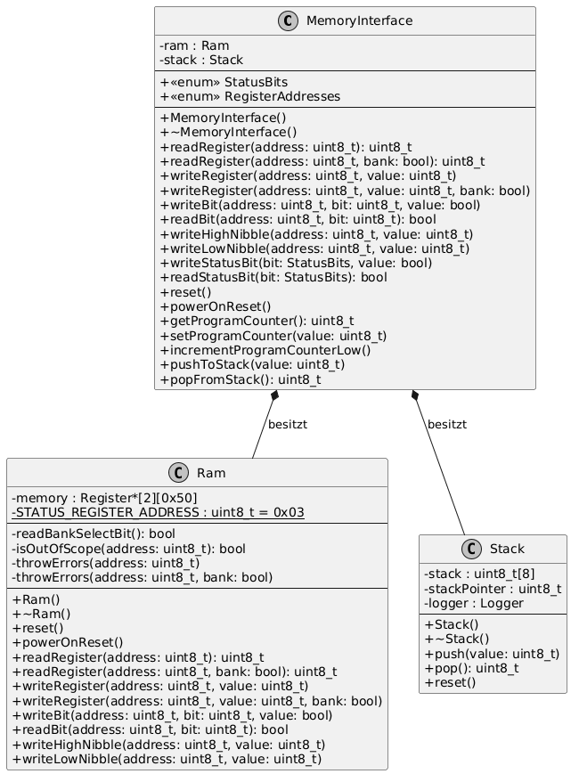
Entity: PIC
Die PIC-Klasse repräsentiert eine konkrete Instanz
eines PIC-Mikrocontrollers mit eigenem Zustand (RAM-Inhalt,
W-Register-Wert, Program Counter, Simulationszeit). Zwei
PIC-Instanzen mit identischem Aufbau unterscheiden sich durch ihren
Zustand – sie haben eine Identität, die über ihren
Lebenszyklus bestehen bleibt. Der PIC durchläuft verschiedene
Zustände (Power-On-Reset, laufende Simulation, Halt), behält aber
seine Identität.
Value Object: Bit
(header/memory/bit.hpp)
Die Klasse Bit ist ein klassisches Value Object:
true/false), der seinen gesamten
Zustand definiert.
true sind austauschbar – es gibt keinen Grund, sie
zu unterscheiden.
Ebenso sind Nibble, Byte und
Register Value Objects, da sie ausschließlich durch
ihren gespeicherten Wert definiert werden.
Die Klasse PIC hat zu viele Verantwortlichkeiten (siehe
SRP-Analyse). Sie enthält 15+ öffentliche Methoden, verwaltet 8
Felder unterschiedlicher Natur (Hardwarekomponenten, Mutex, Logger,
Timing) und ist der zentrale Anlaufpunkt für fast alle Operationen.
Lösungsweg: Extract Class – die
Debugging-/Snapshot-Methoden in eine separate
PICDebugInterface-Klasse auslagern:
// Vorher: alles in PIC
class PIC {
void getSnapshot(PICSnapshot& snapshot);
bool tryWriteRegister(uint8_t addr, uint8_t val, std::string* err);
bool tryToggleBit(uint8_t addr, uint8_t bit, std::string* err);
bool tryStep(std::string* err);
// ... 10+ weitere Methoden
};
// Nachher: aufgeteilt
class PICDebugInterface {
PIC& pic;
mutable std::mutex executionMutex;
public:
void getSnapshot(PICSnapshot& snapshot);
bool tryWriteRegister(uint8_t addr, uint8_t val, std::string* err);
bool tryToggleBit(uint8_t addr, uint8_t bit, std::string* err);
};
Die Methode Compiler::getInstruction() enthält eine
lange Switch-Kaskade mit ~35+ Cases über mehrere Bitmask-Levels.
Dies ist ein typischer "Long Method"-Smell kombiniert mit einem
"Switch Statement"-Smell.
Lösungsweg: Replace Conditional with Polymorphism / Registry-Pattern:
// Vorher: Lange Switch-Kette in getInstruction()
switch(instruction) {
case 0x0064: return std::make_unique<CLRWDT>(instruction);
case 0x0009: return std::make_unique<RETFIE>(instruction);
// ... ~35 Cases über 4 Switch-Blöcke
}
// Nachher: Factory-Registry
class InstructionRegistry {
std::vector<std::pair<uint16_t, uint16_t, Factory>> entries;
public:
void registerInstruction(uint16_t mask, uint16_t pattern, Factory f);
std::unique_ptr<Instruction> create(uint16_t opcode);
};
Beschreibung: Die Snapshot- und Debug-Methoden der
PIC-Klasse werden in eine eigene
PICDebugInterface-Klasse extrahiert.
Begründung: Die PIC-Klasse hat zu viele
Verantwortlichkeiten (God Object). Die Debug-Methoden
(tryWriteRegister, tryToggleBit,
getSnapshot) gehören nicht zur Kernaufgabe der
Simulation, sondern sind eine Schnittstelle für die UI.
Beschreibung: Die statischen Felder
Instruction::memoryInterface und
Instruction::W werden durch Konstruktor-Injection
ersetzt.
Begründung: Statische Felder erzeugen eine versteckte globale Abhängigkeit. Dies verhindert isoliertes Testen (man kann kein Mock-MemoryInterface injizieren) und macht die Instanziierung mehrerer PIC-Instanzen unmöglich.
// Vorher (statische Felder):
class Instruction {
static std::shared_ptr<MemoryInterface> memoryInterface;
static std::shared_ptr<Register> W;
};
// In PIC::PIC(): Instruction::memoryInterface = memoryInterface;
// Nachher (Dependency Injection):
class Instruction {
protected:
std::shared_ptr<MemoryInterface> memoryInterface;
std::shared_ptr<Register> W;
public:
Instruction(std::shared_ptr<MemoryInterface> mem, std::shared_ptr<Register> w)
: memoryInterface(mem), W(w) {}
};
// In Compiler: Jede Instruktion erhält mem und W als Parameter
Einsatz: Die Memory-Hierarchie
Bit → Nibble → Byte → Register implementiert ein
Composite Pattern, bei dem komplexere Speichereinheiten aus
einfacheren zusammengesetzt werden.
Beschreibung:
Bit – speichert einen einzelnen boolschen WertNibble – besteht aus einem Array von 4
Bit-Objekten
Byte – besteht aus 2 Nibble-Objekten
(High + Low)
Register – besteht aus 1 Byte-Objekt
Jede Ebene bietet Zugriffsmethoden auf ihrer Abstraktionsebene
(getBit(), getNibble(),
getByte()) und delegiert bei Bedarf an die
darunterliegende Schicht. Ein Byte kann sowohl als
Ganzes (setByte(0xAB)) als auch auf Nibble- oder
Bitebene manipuliert werden.
Begründung: Die PIC-Hardware operiert auf verschiedenen Granularitätsebenen – Einzelbits (Status-Flags), Nibbles (BCD-Operationen), Bytes (Registerwerte). Das Composite Pattern erlaubt einheitlichen Zugriff auf allen Ebenen, ohne die Implementierungsdetails zu verletzen.
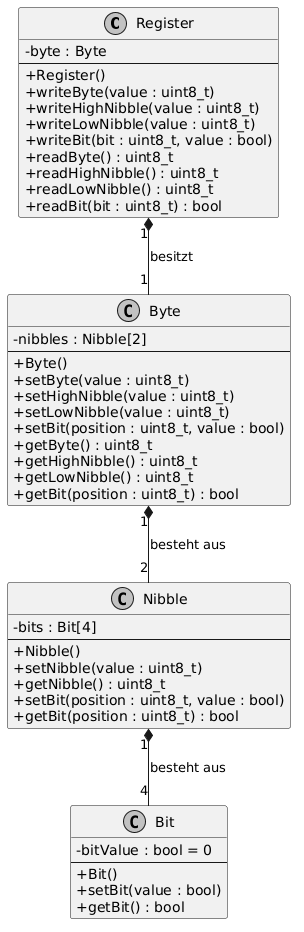
Einsatz: Die Instruction-Hierarchie
implementiert das Strategy Pattern (bzw. Template Method Pattern)
für die Ausführung verschiedener PIC-Instruktionen.
Beschreibung: Die abstrakte Basisklasse
Instruction definiert die Methode
virtual uint16_t execute() = 0. Jede konkrete
Instruktion (ADDWF, SUBWF, GOTO, CALL, BCF, BSF, etc.) implementiert
ihren eigenen Algorithmus in execute(). Die
ALU nutzt die Basisklasse als Schnittstelle und kann
jede Instruktion polymorph ausführen, ohne den konkreten Typ zu
kennen.
// Strategy-Interface:
class Instruction {
virtual uint16_t execute() = 0;
};
// Konkrete Strategien:
class ADDWF : public Arithmetic { uint16_t execute() override { /* Addition */ } };
class GOTO : public Jump { uint16_t execute() override { /* Sprung */ } };
class BCF : public Bitwise { uint16_t execute() override { /* Bit Clear */ } };
// Context (ALU):
class ALU {
uint16_t executeInstruction(Instruction& instr) {
return instr.execute(); // polymorphe Ausführung
}
};
Begründung: Der PIC hat 35+ unterschiedliche Instruktionen, die alle denselben Lebenszyklus durchlaufen (Dekodierung → Ausführung → Zyklenanzahl), aber völlig unterschiedliche Algorithmen haben. Das Strategy Pattern ermöglicht das Hinzufügen neuer Instruktionen durch Erstellung neuer Klassen, ohne bestehenden Code zu ändern.
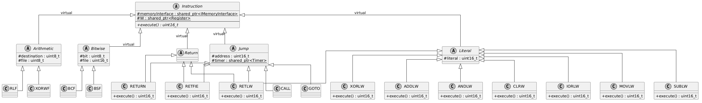